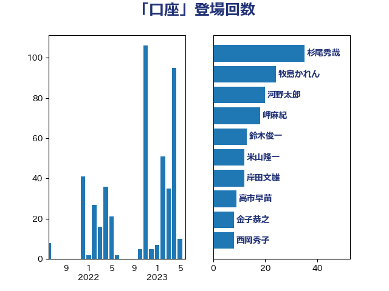

単語「口座」

| 杉尾秀哉 | 立憲民主党 | 35 回 |
| 牧島かれん | 自由民主党 | 24 回 |
| 河野太郎 | 自由民主党 | 20 回 |
| 岬麻紀 | 日本維新の会 | 18 回 |
| 鈴木俊一 | 自由民主党 | 13 回 |
| 米山隆一 | 立憲民主党 | 12 回 |
| 岸田文雄 | 自由民主党 | 12 回 |
| 高市早苗 | 自由民主党 | 9 回 |
| 金子恭之 | 自由民主党 | 8 回 |
| 西岡秀子 | 国民民主党 | 8 回 |
| 後藤茂之 | 自由民主党 | 7 回 |
| 寺田稔 | 自由民主党 | 7 回 |
| 輿水恵一 | 公明党 | 6 回 |
| 松本剛明 | 自由民主党 | 6 回 |
| 打越さく良 | 立憲民主党 | 6 回 |
| 宮路拓馬 | 自由民主党 | 6 回 |
| 阿部弘樹 | 日本維新の会 | 5 回 |
| 沢田良 | 日本維新の会 | 5 回 |
| 宮本徹 | 日本共産党 | 5 回 |
| 仁木博文 | 無所属 | 5 回 |
| 玉木雄一郎 | 国民民主党 | 4 回 |
| 小西洋之 | 立憲民主党 | 4 回 |
| 宮本岳志 | 日本共産党 | 4 回 |
| 竹内譲 | 公明党 | 3 回 |
| 稲津久 | 公明党 | 3 回 |
| 稲富修二 | 立憲民主党 | 3 回 |
| 福田昭夫 | 立憲民主党 | 3 回 |
| 浜田聡 | NHK党 | 3 回 |
| 浅野哲 | 国民民主党 | 3 回 |
| 横山信一 | 公明党 | 3 回 |
| 堀場幸子 | 日本維新の会 | 3 回 |
| 馬淵澄夫 | 立憲民主党 | 2 回 |
| 音喜多駿 | 日本維新の会 | 2 回 |
| 階猛 | 立憲民主党 | 2 回 |
| 阿部司 | 日本維新の会 | 2 回 |
| 野田聖子 | 自由民主党 | 2 回 |
| 足立康史 | 日本維新の会 | 2 回 |
| 西田昌司 | 自由民主党 | 2 回 |
| 西村智奈美 | 立憲民主党 | 2 回 |
| 笠井亮 | 日本共産党 | 2 回 |
| 石川博崇 | 公明党 | 2 回 |
| 田村まみ | 国民民主党 | 2 回 |
| 牧義夫 | 立憲民主党 | 2 回 |
| 柴愼一 | 立憲民主党 | 2 回 |
| 柳ヶ瀬裕文 | 日本維新の会 | 2 回 |
| 松山政司 | 自由民主党 | 2 回 |
| 川田龍平 | 立憲民主党 | 2 回 |
| 堤かなめ | 立憲民主党 | 2 回 |
| 吉田宣弘 | 公明党 | 2 回 |
| 前原誠司 | 国民民主党 | 2 回 |
| 住吉寛紀 | 日本維新の会 | 2 回 |
| 長妻昭 | 立憲民主党 | 1 回 |
| 野村哲郎 | 自由民主党 | 1 回 |
| 道下大樹 | 立憲民主党 | 1 回 |
| 藤丸敏 | 自由民主党 | 1 回 |
| 緒方林太郎 | 無所属 | 1 回 |
| 竹詰仁 | 国民民主党 | 1 回 |
| 秋本真利 | 自由民主党 | 1 回 |
| 福島みずほ | 社会民主党 | 1 回 |
| 白石洋一 | 立憲民主党 | 1 回 |
| 田村貴昭 | 日本共産党 | 1 回 |
| 田所嘉徳 | 自由民主党 | 1 回 |
| 田中健 | 国民民主党 | 1 回 |
| 本村伸子 | 日本共産党 | 1 回 |
| 岡本あき子 | 立憲民主党 | 1 回 |
| 山際大志郎 | 自由民主党 | 1 回 |
| 山本博司 | 公明党 | 1 回 |
| 山崎正恭 | 公明党 | 1 回 |
| 山井和則 | 立憲民主党 | 1 回 |
| 小川淳也 | 立憲民主党 | 1 回 |
| 守島正 | 日本維新の会 | 1 回 |
| 奥野総一郎 | 立憲民主党 | 1 回 |
| 大串正樹 | 自由民主党 | 1 回 |
| 塩村あやか | 立憲民主党 | 1 回 |
| 塩川鉄也 | 日本共産党 | 1 回 |
| 塩崎彰久 | 自由民主党 | 1 回 |
| 吉良州司 | 無所属 | 1 回 |
| 吉田久美子 | 公明党 | 1 回 |
| 務台俊介 | 自由民主党 | 1 回 |
| 加藤勝信 | 自由民主党 | 1 回 |
| 伴野豊 | 立憲民主党 | 1 回 |
| 仁比聡平 | 日本共産党 | 1 回 |
| 井上哲士 | 日本共産党 | 1 回 |
| 中条きよし | 日本維新の会 | 1 回 |
| 中司宏 | 日本維新の会 | 1 回 |
| ながえ孝子 | 無所属 | 1 回 |
| おおつき紅葉 | 立憲民主党 | 1 回 |